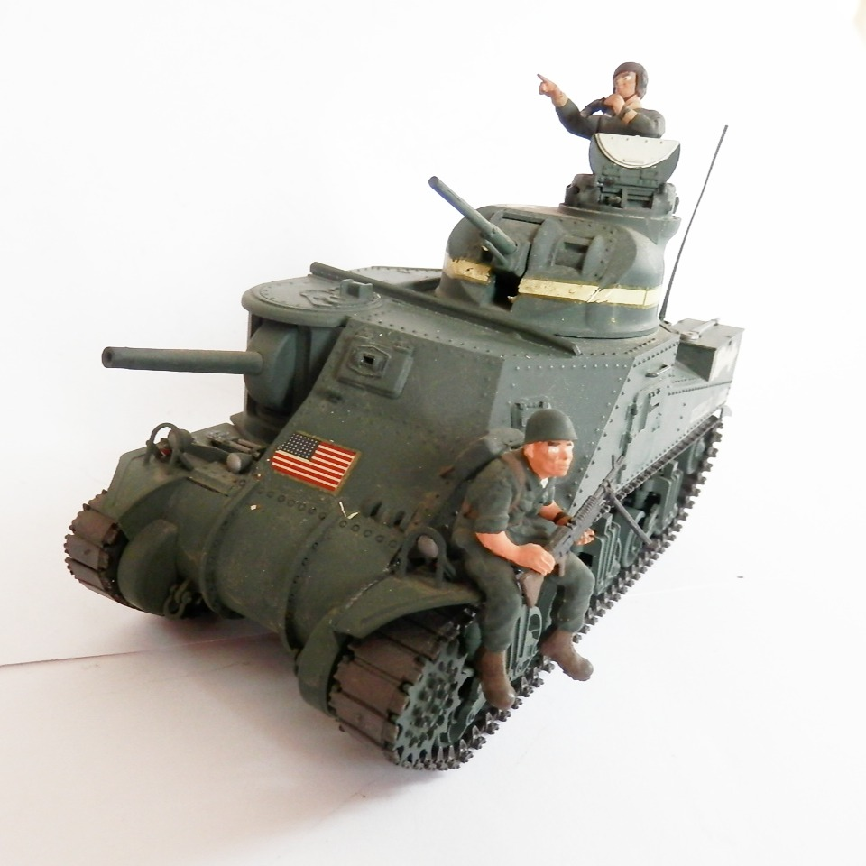
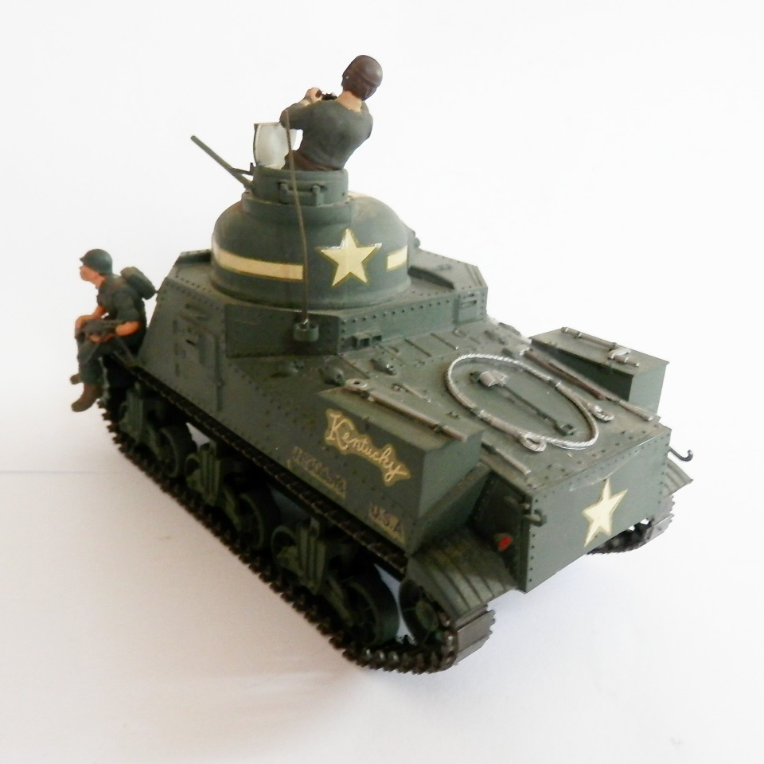

Mezzi militari · scale model archive
US Medium Tank M3
US Medium Tank M3 — Kit: Scale: 1/35, Scale: 1/35. Model by Riccardo Brambilla

Photo gallery

English description
Model by Riccardo Brambilla
Descrizione italiana
Modello di Riccardo Brambilla.